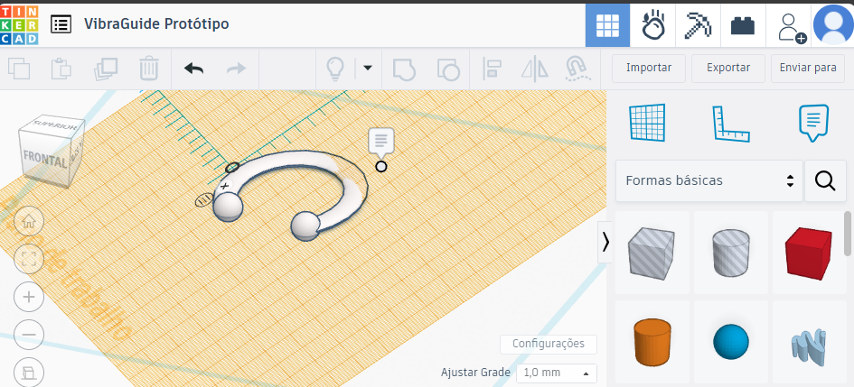
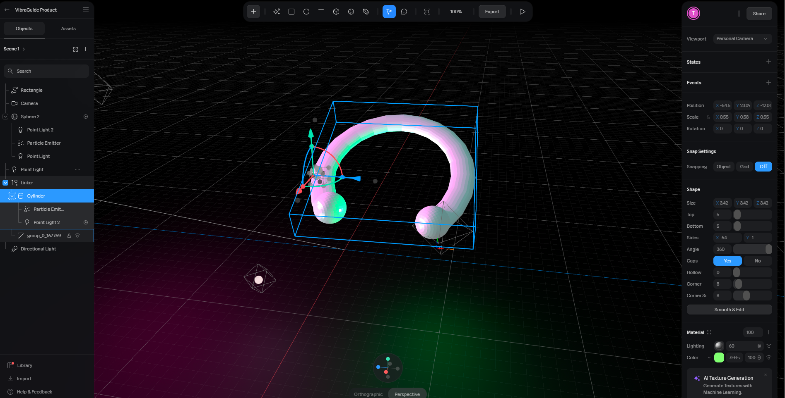

VibraGuide
O guia de jogos FPS para surdos
Aqui tem
Sobre nós
Desenvolvedores WEB nas horas vagas e jogadores de Valorant em tempo (quase) integral.
Takeshi Miura
Sara C. Fernandes
Público-Alvo
Jogadores de FPS
Pessoas surdas
Pessoas com algum grau de perda auditiva
Objetivos
Nosso objetivo é desenvolver um dispositivo inovador que permita que pessoas surdas tenham uma percepção espacial de som por meio de vibrações direcionais, promovendo inclusão e acessibilidade em áreas como jogos, segurança e interações cotidianas. O dispositivo oferecerá uma experiência sensorial rica, transformando sons em vibrações que orientam o usuário sobre a direção e a intensidade do som.
Justificativa
A acessibilidade em jogos eletrônicos, especialmente no gênero de tiro em primeira pessoa (FPS), ainda está em estágios iniciais de desenvolvimento, comprometendo a experiência de muitos jogadores, incluindo aqueles com deficiência auditiva. Conforme aponta Assis (2017), "o som é elemento necessário para a diversão e imersão" nos jogos FPS, e a ausência de recursos inclusivos afeta significativamente a experiência de jogadores surdos. Devido a essa lacuna, muitos jogos não oferecem elementos alternativos que compensem a falta de percepção auditiva, gerando frustração e excluindo esse público, tanto amadores, quanto possíveis profissionais do cenário.
Um exemplo de como o som pode influenciar na jogabilidade e na experiência do jogador é o jogo de FPS chamado Valorant, da empresa Riot Games. Nele, o jogador consegue ouvir os sons direcionais dos passos dos oponentes. Além disso, dependendo da estrutura do chão, o som varia, ajudando a identificar a localização aproximada do oponente. O vídeo abaixo demonstra os sons direcionais dos passos nesse jogo.
Considerando o impacto negativo que a ausência de acessibilidade sonora pode ter na experiência e imersão desses jogadores, o desenvolvimento de soluções tecnológicas que proporcionem uma percepção espacial alternativa é essencial. A proposta do dispositivo que converte sons em vibrações direcionais, o VibraGuide, é, portanto, uma tentativa de oferecer a esses jogadores uma maneira de interagir de forma mais completa e imersiva com o ambiente digital.
Metodologia
A metodologia empregada neste trabalho foi exploratória, adequada para explorar questões iniciais sobre a acessibilidade em jogos de FPS para jogadores surdos ou com baixa audição. Esta abordagem foi escolhida para entender o cenário atual da acessibilidade e suas lacunas e se baseou em:
Revisão de Literatura:
Pesquisa de Artigos e Fontes Online
Foram revisados artigos acadêmicos e fontes online focadas em acessibilidade para jogos, com especial atenção às adaptações necessárias para jogadores com deficiência auditiva.
Experiência Pessoal
Baseado nas experiências próprias como jogadores de FPS, foram identificadas dificuldades comuns enfrentadas por jogadores surdos e discutidas possíveis soluções para melhorar a acessibilidade.
Prototipagem e Desenvolvimento:
Modelagem 3D do Produto
Foi realizada a modelagem 3D do dispositivo para visualizar e testar o design e a funcionalidade do produto em um ambiente virtual.
Produção do Site
Foi criado um site para exemplificar como o produto seria apresentado, incluindo informações sobre suas funcionalidades e benefícios.
Protótipos
Para o desenvolvimento do protótipo do dispositivo, foi utilizada uma abordagem em duas etapas. Primeiramente, a modelagem do produto foi realizada no Tinkercad, um programa de design 3D intuitivo que permite a criação de modelos tridimensionais com precisão. O Tinkercad foi escolhido devido à sua simplicidade e eficácia na criação de modelos básicos e detalhados.
Após a conclusão da modelagem em 3D no Tinkercad, o modelo foi exportado para o Spline, uma ferramenta avançada para criação de animações, jogos de luzes e reflexos. No Spline, foram realizadas animações detalhadas do protótipo, incluindo simulações de iluminação e reflexos para demonstrar o visual final do produto em diferentes condições. Este processo permitiu a visualização realista do dispositivo, fornecendo uma visão clara de como ele funcionaria e se comportaria em um ambiente digital.
Abaixo está o protótipo interativo, onde é possível arrastar e movê-lo tridimensionalmente:
Resultados esperados
Melhorar jogabilidade
Proporcionar uma experiência mais imersiva e inclusiva, permitindo que surdos e pessoas com deficiência auditiva possam jogar e sentir o ambiente de forma mais completa, reduzindo barreiras sensoriais através da vibração espacial e outros recursos adaptados ao produto.
Acessibilidade inclusiva
Garantir que jogadores surdos tenham acessibilidade completa, sem perder funcionalidades importantes no jogo.
Inovação tecnológica
Desenvolver uma tecnologia de som espacial através de vibrações, facilitando a percepção de direções para jogadores surdos.
Referências
ASSIS, Rodrigo Arruda de; MOTA, Rosilane. Análise de elementos de interface de jogos digitais para pessoas surdas baseada em sinais fisiológicos. In: SIMPÓSIO BRASILEIRO DE GAMES E ENTRETENIMENTO DIGITAL (SBGAMES), 16., 2017, Curitiba. Anais [...]. Curitiba: SBGames, 2017.
Abrir PDF